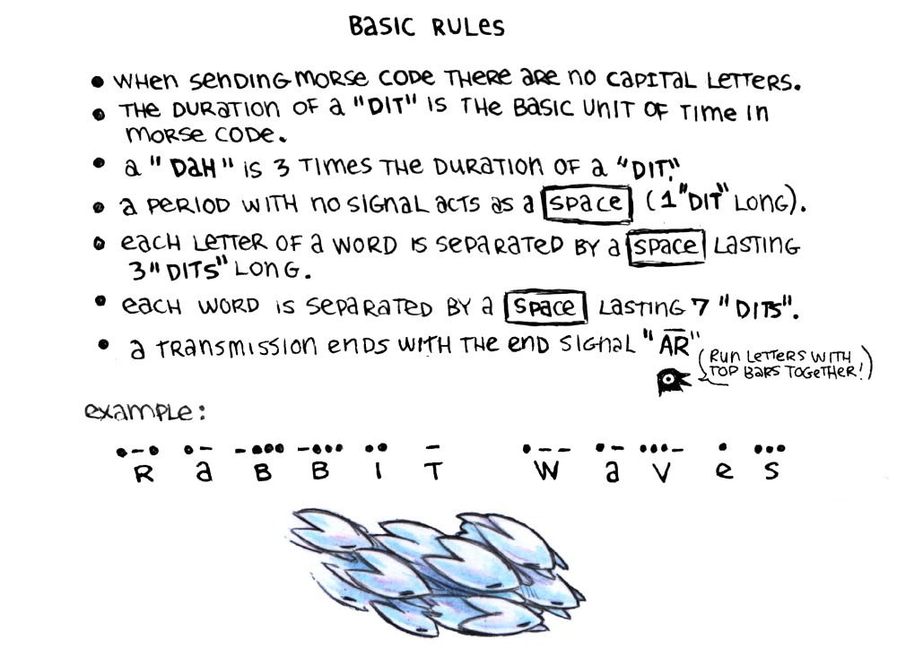
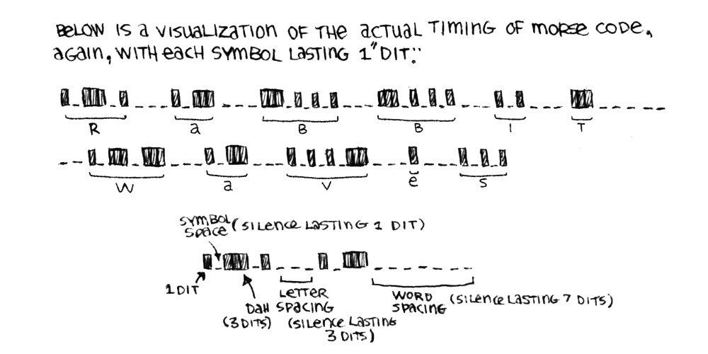

The International Morse Code is a way to communicate that consists of short and long sounds that penetrate interference with greater quality than spoken words.
The sounds are encoded are and expressed as: Dots, or Dits and Dashes, or Dahs.
There are... 1)26 basic latin letters (a-z) 2) One accented latin letter 3) Arabic numerals (0-9) 4) Some punctuation & prosigns.
Prosigns, or procedural signals, are shorthand signals used in radio. For example, "SOS", which is run as one word rather than as separate letters.
Morse Code Encoding for Letters and Numbers
Letter table: A = dit dah, B = Dah dit dit dit, C = Dah dit dah dit, D = Dah dit dit, E = Dit, F = Dit dit dah dit, G = Dah dah dit, H = Dit dit dit dit, I = Dit dit, J = Dit dah dah dah, K = Dah dit dah, L = Dit dah dit dit, M = Dah dah, N = Dah dit, O = Dah dah dah, P = Dit dah dah dit, Q = Dah dah dit dah, R = Dit dah dit, S = Dit dit dit, T = Dah, U = Dit dit dah, V = Dit dit dit dah, W = Dit dah dah, X = Dah dit dit dah, Y = Dah dit dah dah, & Z = Dah dah dit dit. Number table: 1 = Dit dah dah dah dah, 2 = Dit dit dah dah dah, 3 = Dit dit dit dah dah, 4 = Dit dit dit dit dah, 5 = Dit dit dit dit dit, 6 = Dah dit dit dit dit, 7 = Dah dah dit dit dit, 8 = Dah dah dah dit dit, 9 = Dah dah dah dah dit, and 0 = Dah dah dah dah dah.
Cut Numbers
Most numerals have a short form(not official), that temporarily borrows some of the encoding used for letters to communicate faster. The sender & receiver both have to understand that numbers are sent prior to transmitting.
A table of cut numbers begins: 1 = Dit dah(which is usually the code for A), 2 = Dit dit dah (code for U), 3 = Dit dit dit dah (code for V), 4 = (no short form), 5 = Dit (code for E), 6 = (no short form), 7 = Dah dit dit dit (code for B), 8 = Dah dit dit (code for D), 9 = Dah dit (code for N) and 0 = Dah (code for T).
A side note for the number 5 reads as follows: Some people send the uncit number for 5, because it is easy to mistake one dit for another signal.
When listening to combinations of Dits & Dahs, it is essential to learn to hear the particular character as a whole sound with a distinct rhythm.
Learn to recognize them by their sound patterns, not as separate elements. Think in code when reading, spare time practice will commit the melodies to the brain.
Basic Rules for Morse Code
Rule 1: When sending Morse Code, these are no capital letters. Rule 2: The duration of a "dit" is the basic unit of time in Morse Code. Rule 3: A "dah" is 3 times the duration of a "dit". Rule 4: A period with no signal acts as a "Space" lasting 1 "dit" long. Rule 5: Each letter of a word is separated by a "Space" that is 3 "dits" long. Rule 6: Each word is separated by a "Space" lasting 7 "dits."
Timing for Morse Code
Below is a visualization of the actual timing of Morse Code, again, with each symbol lasting 1 "dit." Following is a graphic showing the timing using "Rabbit Waves" as an example. The graphic follows the timing rules outlined in Rules 1-6 outlined above.
Brevity Codes
Brevity codes are designed to communicate complex information quickly, with greater accuracy, with a few words or code:
Rule 1: Q codes ranging from QOA to QQZ are reserved for use at sea. Rule 2: When using the letter C after certain abbreviations, the message takes on a negative sense. Rule 3: When using the letters N O after certain abbreviations, the message takes on a negative sense. Rule 4: Appending other groups, place names, numbers to abbreviations provides more detail.
Examples of abbreviations: QOD "Can you communicate with me in..." 0. Dutch, 1. English, 2. French, 3. German, 4. Greek, 5. Italian, 6. Japanese, 7. Norwegian, 8. Russian 9. Spanish.
QRD "Where are you bound for and where are you from?" QUA "Have you news of ... (name/call sign)?" QSQ "Have you a doctor on board?" QUX "Do you have any navigational warnings or gale warnings in force?"
Morse Code in other languages
Morse code was initially designed for latin characters, but have since been adapted to languages like Russian & Arabic. An example shows the Prosign WAIT in Russian, Arabic and in Morse Code(dit dah dit dit dit).
Languages with more characters, like Chinese, weren't as easy to transpose to Morse.
Instead of dots & dashes being assigned to characters directly, they assigned them to numbers instead. Characters were each assigned a 4-digit code ranging from 0000-9999, arranged & numbered in dictionary order according to their radicals & strokes.
An example shows the Morse numbers assigned to the Chinese characters used to spell out "wait"(等待). 等 was assigned 4583, and 待 was assigned 1769.
Because Chinese doesn't use non-digit characters, it is possible to simplify the morse code for digits(numbers can be quite long).